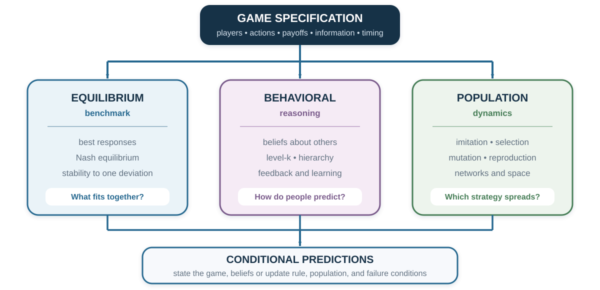
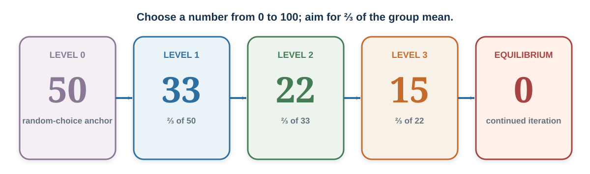

24 Behavioral Game Theory: Equilibrium Is a Benchmark, Not a Portrait
Game theory asks what fits together. Behavioral game theory asks how people actually decide what others will do.
“Players in a game are ‘in equilibrium’ if they are rational, and accurately predict other players’ strategies.”
— Colin F. Camerer, Teck-Hua Ho, and Juin-Kuan Chong, “A Cognitive Hierarchy Model of Games”, 2004, p. 861
Learning goals
- Compare equilibrium, level-k, and cognitive-hierarchy accounts of one beauty-contest dataset.
- Separate initial bounded reasoning from belief learning, imitation, and reinforcement across rounds.
- Design an observation or treatment that distinguishes competing explanations for the same strategic action.
Opening puzzle: should a sophisticated player choose zero?
Everyone chooses a number from 0 to 100. The winner is closest to two-thirds of the group’s mean.
If choices were random, the mean would be about 50, so a best response would be about 33. If others make that calculation, a best response is about 22. If they expect one more step, the answer is about 15. Repeating the reasoning drives the choice toward zero.
Under common knowledge of rationality, iterated elimination removes choices above \(66\frac{2}{3}\), then above \(44\frac{4}{9}\), and so on. The unique Nash equilibrium is zero.
But now imagine that most participants choose between 20 and 40. A player who chooses zero because “zero is the equilibrium” may lose to a player who predicts the group. The equilibrium calculation is correct under its assumptions. The decision is poor because the population is not at equilibrium.
This is the central puzzle. Strategic sophistication is not the number of steps one can calculate in isolation. It is choosing the depth of reasoning that fits other people’s reasoning.
Two beauty contests
The same contrast can be taught without numbers. First choose the face you personally find most attractive from a set. Then choose the face you expect most other people to select. The first question asks for preference; the second asks for a prediction about a prediction. Any class changes are an activity result, not population evidence.
The poisoned-goblet scene from The Princess Bride dramatizes recursive reasoning: “I think that you think that I think….” Pause before the reveal and map each step. Then identify the information that makes the displayed reasoning unproductive. The clip is copyrighted fiction and illustrates a puzzle; it does not estimate human reasoning depth.

Three lenses, three questions
| Lens | Decision rule | Primary question | What it does not establish |
|---|---|---|---|
| Equilibrium benchmark | Each strategy is a best response to the others. | Which strategy profiles are mutually stable? | That people know the game, reach equilibrium, or approve of it. |
| Behavioral reasoning | Players respond to beliefs about less or differently sophisticated players. | How many strategic steps fit observed play? | A fixed intelligence trait or the true belief behind one action. |
| Population dynamics | More successful strategies become more common through selection, imitation, or reproduction. | Which strategies grow, shrink, or coexist under a specified update rule? | Deliberate reasoning, moral endorsement, or transport to human populations. |
The lenses can complement one another. They cannot be substituted without changing the claim. A Nash equilibrium is not an estimate of average behavior. A level-2 choice is not an evolutionarily stable strategy. A strategy that spreads in a spatial simulation need not be anyone’s conscious best response.
The core narrative uses the first two lenses to predict other minds and explain adjustment after feedback. The population-dynamics lens is optional: it asks how strategies change in frequency under a declared update rule, not how one person reasons.
Limited strategic depth: level-k
A level-k model replaces the assumption of perfectly matched equilibrium beliefs with a hierarchy of simple responses (Nagel, 1995; Stahl & Wilson, 1995). Behavioral game theory uses such models as disciplined alternatives to treating equilibrium as a literal description of first-round play (Camerer, 2003; Crawford et al., 2013).

Figure 24.2 makes the theoretical recursion visible. It should not be read backward as a psychological scanner. A choice of 22 can reflect a level-2 best response, but also a different belief, arithmetic error, anchoring, or a focal point. Beliefs and comprehension are needed before a strategic level is assigned.
- Level 0 is a specified nonstrategic anchor. In the number game, it is often modeled as uniform random choice with mean 50.
- Level 1 best responds to level 0 and chooses about \(\frac{2}{3}\times50=33\).
- Level 2 best responds to level 1 and chooses about \(\frac{2}{3}\times33=22\).
- Level 3 best responds to level 2 and chooses about 15.
The labels describe a model of choice in one task. They are not ranks of intelligence. The same person can use different depths when the game, incentives, time, experience, presentation, or opponent changes. Level 0 is also a modeling decision: random play may be plausible in one game and implausible in another.
Cognitive hierarchy: best respond to a mixture
Cognitive hierarchy makes a different assumption. A step-\(k\) thinker best responds not to one lower type, but to a distribution of steps \(0\) through \(k-1\) (Camerer, Ho, & Chong, 2004). The population frequency of step \(h\) is often modeled with a Poisson distribution,
\[ f(h)=\frac{e^{-\tau}\tau^h}{h!}, \]
and a step-\(k\) player renormalizes this distribution over the lower steps they believe exist. The parameter \(\tau\) governs the population’s average number of steps. Camerer, Ho, and Chong report that an average of about 1.5 steps fits behavior across many games. That is a model fit across tasks—not a law that every person takes one and a half steps.
The following cross-group number-game summary makes heterogeneity visible. It is descriptive, drawn from different settings and samples, and should not be read as a causal ranking of occupations or education.
| Participant group | Group size | Mean choice | Modal choice | Fitted \(\tau\) |
|---|---|---|---|---|
| Chief executives | 20 | 37.9 | 33 | 1.0 |
| German students | 66 | 37.2 | 25 | 1.1 |
| U.S. high-school students | 52 | 32.5 | 33 | 1.6 |
| Economics PhDs | 16 | 27.4 | — | 2.3 |
| Portfolio managers | 26 | 24.3 | 22 | 2.8 |
| Caltech students | 42 | 23.0 | 35 | 3.0 |
| Newspaper participants | 7,884 | 23.0 | 1 | 3.0 |
| Game theorists | 136 | 19.1 | 0 | 3.7 |
Large within-group dispersion remains. A fitted \(\tau\) is a population-and-model parameter. It should not be converted into an individual psychological diagnosis.
The action does not identify the thought
Suppose someone chooses 22. They may be level 2. But they may also believe the mean will be 33 for another reason, copy a familiar answer, misunderstand the target, anchor on a previous round, or choose strategically after observing the participant pool.
This is an identification problem. Choice data can be consistent with several combinations of beliefs and preferences. Better evidence may include:
- an incentive-compatible belief report;
- response time and information search;
- repeated choices across games with different best responses;
- exogenous changes in information about opponents;
- learning after feedback;
- process measures interpreted alongside, not instead of, behavior.
Coricelli and Nagel (2009) compared strategic reasoning against human and computer opponents using behavioral and neural measures. Their results are consistent with different processing as strategic depth increases. Yet a brain region is not a unique label for “level 2,” and correlational activation cannot by itself identify the computation or show that the process caused the choice. Neural evidence narrows some accounts; it does not eliminate the behavioral identification problem.
Learning is not the same as deeper initial reasoning
After several rounds, choices in a number game often move toward lower values. That path may reflect belief learning, reinforcement, imitation, comprehension, or selection among participants. Calling it “more rational” skips the mechanism.
To distinguish accounts, vary what participants receive:
- choices only: participants see others’ actions but not payoffs;
- payoffs only: participants learn success but not the full action distribution;
- belief information: participants receive a credible signal about others;
- counterfactual feedback: participants see what alternative actions would have earned;
- no feedback: repeated choices reveal mere task familiarity or self-generated change.
Different models predict different responses to these information treatments. A learning claim becomes useful when it states what is learned, from which signal, under which update rule.
Application: choose the model after diagnosing the process
Suppose a team asks why one work routine is spreading. First ask whether employees are deliberately best responding to colleagues or anticipating what colleagues will anticipate. If the claim is about diffusion, use four distinct tests:
| Candidate process | Diagnostic question | Discriminating evidence |
|---|---|---|
| Reinforcement | Did the employee repeat a routine after it worked for them? | Hold information about others constant and vary feedback about the employee’s own outcome. |
| Imitation | Are employees copying visible or prestigious performers? | Hold own-outcome feedback constant and vary whose behavior is visible. |
| Selection | Are routines spreading because teams or employees using alternatives disappear or lose resources? | Separate change within continuing units from replacement or differential survival of units. |
| Institution | Did software, incentives, defaults, or management make one routine easier or mandatory? | Identify the rule change and compare behavior under otherwise similar institutional conditions. |
The processes can coexist, so record which signal each account requires and what observation would weaken it. Do not call every spread behavior “evolutionary” merely because its frequency changes.
Ethics: strategic classification can become a weapon
Level labels, brain images, and evolutionary language can give a fragile inference an aura of inevitability.
- A low number-game choice is not proof of superior intelligence.
- An equilibrium is not a moral endorsement.
- A neural correlate is not a diagnosis.
- A simulated group pattern is not proof of an innate tendency.
- A successful strategy can impose costs on people outside the modeled population.
The defensible use of a strategic model makes its payoff assumptions, population, update rule, uncertainty, and failure conditions inspectable. People affected should be able to ask what the model leaves out and how a classification can be corrected.
Practice Lab
Run five rounds of the two-thirds number game. Record the full distribution, individual revisions, the mean, and the target each round. Produce three rival accounts of any movement—deeper reasoning, belief learning, and imitation or reinforcement—then design one additional treatment that gives them different predictions. The output is the annotated path plus the discriminating treatment.
Take it forward
- Use this when equilibrium is a useful benchmark but initial play or adjustment does not match it.
- Do not infer a person’s belief, reasoning level, or stable type from one observed action.
- Try this next by writing two mechanisms that predict the action and one treatment on which their predictions diverge.
Knowing how people reason strategically does not yet explain why they cooperate. The same cooperative action may arise from future consequences, reputation, enforcement, concern for others, or norms. The next chapter separates those mechanisms before treating cooperation as evidence about motive.
References cited in this chapter
Axelrod, R. (1984). The evolution of cooperation. Basic Books.
Camerer, C. F. (2003). Behavioral game theory: Experiments in strategic interaction. Princeton University Press.
Camerer, C. F., Ho, T.-H., & Chong, J.-K. (2004). A cognitive hierarchy model of games. Quarterly Journal of Economics, 119(3), 861–898. https://doi.org/10.1162/0033553041502225
Coricelli, G., & Nagel, R. (2009). Neural correlates of depth of strategic reasoning in medial prefrontal cortex. Proceedings of the National Academy of Sciences, 106(23), 9163–9168. https://doi.org/10.1073/pnas.0807721106
Crawford, V. P., Costa-Gomes, M. A., & Iriberri, N. (2013). Structural models of nonequilibrium strategic thinking: Theory, evidence, and applications. Journal of Economic Literature, 51(1), 5–62. https://doi.org/10.1257/jel.51.1.5
Hammond, R. A., & Axelrod, R. (2006). The evolution of ethnocentrism. Journal of Conflict Resolution, 50(6), 926–936. https://doi.org/10.1177/0022002706293470
Imhof, L. A., Fudenberg, D., & Nowak, M. A. (2007). Tit-for-tat or win-stay, lose-shift? Journal of Theoretical Biology, 247(3), 574–580. https://doi.org/10.1016/j.jtbi.2007.03.027
Maynard Smith, J., & Price, G. R. (1973). The logic of animal conflict. Nature, 246, 15–18. https://doi.org/10.1038/246015a0
Nagel, R. (1995). Unraveling in guessing games: An experimental study. American Economic Review, 85(5), 1313–1326.
Schelling, T. C. (1969). Models of segregation. American Economic Review, 59(2), 488–493.
Stahl, D. O., & Wilson, P. W. (1995). On players’ models of other players: Theory and experimental evidence. Games and Economic Behavior, 10(1), 218–254. https://doi.org/10.1006/game.1995.1031
Wilensky, U. (1997). NetLogo Segregation model. Center for Connected Learning and Computer-Based Modeling, Northwestern University. http://ccl.northwestern.edu/netlogo/models/Segregation
Wilensky, U. (2002). NetLogo PD Basic Evolutionary model. Center for Connected Learning and Computer-Based Modeling, Northwestern University. http://ccl.northwestern.edu/netlogo/models/PDBasicEvolutionary
Wilensky, U. (2003). NetLogo Ethnocentrism Alternative Visualization model. Center for Connected Learning and Computer-Based Modeling, Northwestern University. http://ccl.northwestern.edu/netlogo/models/EthnocentrismAlternativeVisualization